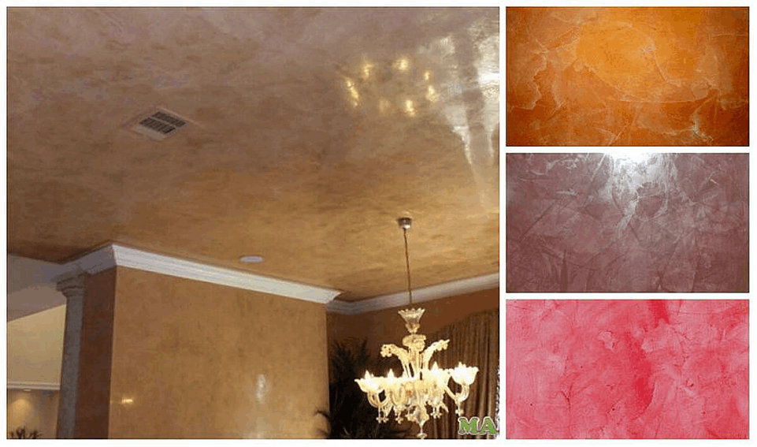
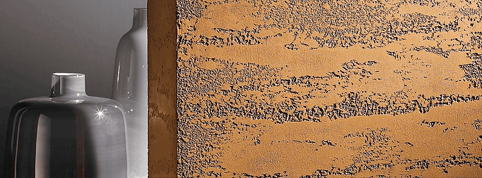
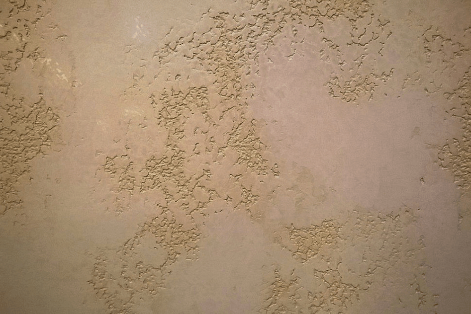
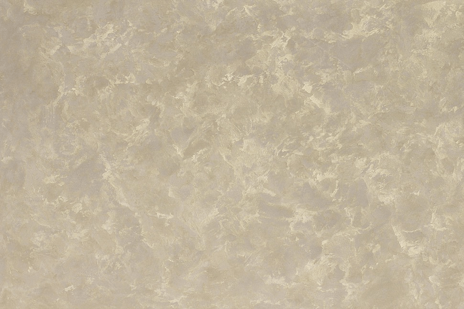
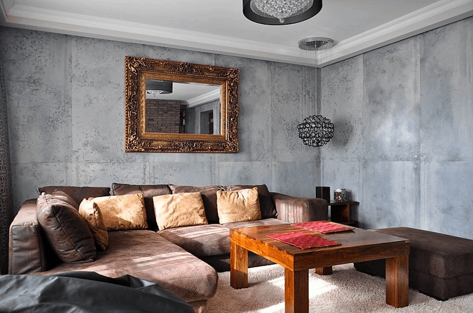
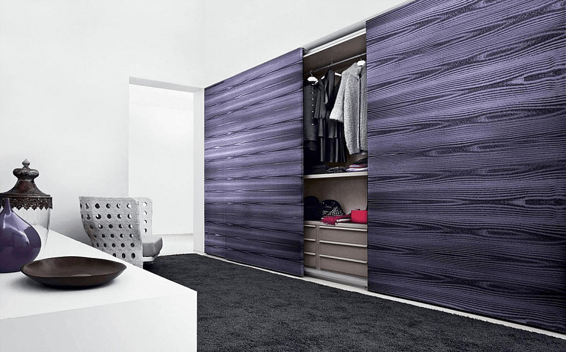
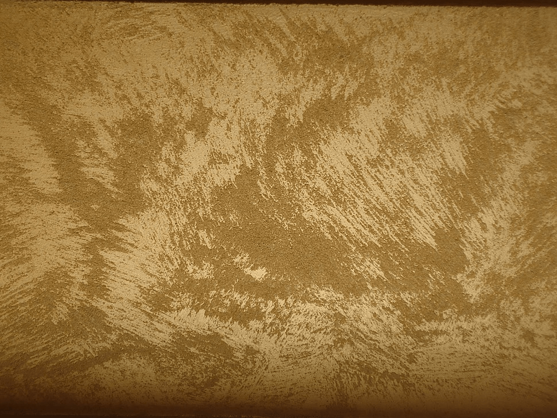

/ Блог/ / Блог/ 7 удивительных декоративных штукатурок, которые преобразят Ваш интерьер в
потрясающий шедевр!!!
7 удивительных декоративных штукатурок, которые преобразят
Ваш интерьер в потрясающий шедевр!!!
На сегодняшний день для ремонта квартир, домов, офисов, ресторанов, огромный выбор разнообразных
товаров. Декоративная штукатурка по-прежнему занимает среди них первое место, так как простота
нанесения, практичность и экологичность материала. Она скрывает неровности стен и дефекты,
позволяет
стенам дышать, не имеет запаха при нанесении, используется как для внутренних работ, так и для
фасадов помещений.
1
Венецианская штукатурка – это эффект отполированного мрамора, состоит из известковой и
мраморной муки, она не вредит здоровью, так как в ее состав входят природные компоненты.
Благодаря этому она очень популярна пре отделки стен в детских комнатах, кухни, ванные,
бассейны. Важным преимуществом еще является возможность колеровки в любой цвет. Срок службы
венецианской штукатурки измеряется не годами, а десятками лет.

2
Травертино – это разновидность декоративной штукатурки, которая имитирует фактуру
натурального камня - травертина. Декоративная штукатурка обладает повышенными
эксплуатационными характеристиками, прекрасный вариант для помещений с перепадами
температуры и влажности, также с присутствием в доме домашних животных. Декоративное
покрытие легко моется и достаточно прочное, часто именно его выбирают как для фасадов, так и
внутренней отделки. Штукатурка натуральная, дышащая, предотвращает образование плесени и
бактерий.

Мастер- класс от наших партнеров по нанесению декоративного покрытия с эффектом "Травертин"
3
Марморино –декоративная штукатурка на основе гашеной извести с эффектом камня. Изюминка
данной штукатурки – разнообразие текстурного орнамента, цвета которого плавно перетекают из
одного оттенка в другой. Так же данный материал не требует тщательной подготовки рабочей
поверхности, что является значительным плюсом. Декоративное покрытие марморино позволяет
получить матовый эффект для стен, а так же глянцевый блеск. Марморино способствует
пропусканию воздуха, что является защитой от грибков и бактерий.

4
Отточенто – декоративное покрытие, имитирующие ткань, поскольку его текстура подобна
бархату, благодаря изменению угла отражения света создает оптический эффект бархатной ткани.
Материал прекрасно подходит для внутренних отделочных работ, влагоустойчив, богатая
колористическая гамма.

5
Эффект «Бетона» - тип декоративной штукатурки для создания поверхности похожей на бетон. Это
актуальная отделка стен для современных стилей интерьера, таких как лофт, хай-тек. По вашему
желанию бетон может быть сильно состаренным, матовым, глянцевым. Богатый выбор штукатурных
составов, легкое нанесение. После полного высыхания не боится влажной уборки и по прочности
не уступает натуральному, а выглядит намного эстетичней и благородней.

6
Эффект «Дерева» - это декоративная штукатурка, которая в точности повторяет рисунок и рельеф
коры дерева. Для достоверной имитации используется натуральные природные оттенки. Что бы
создать оригинальные эффекты на штукатурку наноситься декоративная краска. Несомненным
плюсом будет также то, что декоративное покрытие может использоваться в местах, где обычное
дерево не применить, также декоративная штукатурка пожаробезопасна.

7
Сахара – декоративное покрытие с эффектом перламутра и с мелкими песчинками, покрытие
паропроницаемое, предназначенное для внутренней отделки помещений. Различные техники
нанесения позволяют получать разнообразные рисунки. Оттенок декоративной штукатурки после
нанесения будет меняться в зависимости от угла обзора и падения света. Выпускается в двух
базах: Silver и Gold.

Если ровные, однотонные стены Вам не интересны – тогда декоративная штукатурка внесет
разнообразие в ваш интерьер. Используя штукатурку можно создавать рельефное, фактурное покрытие
на любой поверхности, станет для Вас лучшим выбором!!!